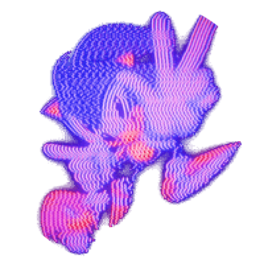

Olá, Dev. Kauã
na área
Um desenvolvedor full-stack em treinamento. Não escrevo apenas linhas de codigos, escrevo linhas que dão vida a projetos vivos, usando minha essencia como base, me espelhando em cada aspectos de meus projetos.

Hello word!!
Olá! Sou Kauã, desenvolvedor em formação e apaixonado por tecnologia. Possuo uma grande curiosidade pela area, a qual se tranformou em uma busca constante por conhecimento e evolução.
Atualmente, curso Desenvolvimento de Software Multiplataforma (DSM) na FATEC, onde cresco e desenvolvo meu conhecimento em linguagens de programação, banco de dados, arquitetura de software e boas praticas.
Gosto de transformar ideias em soluções práticas, enfrentar novos desafios e aprender continuament. Sempre buscando oportunidades para apriomorar minhas habilidades e cresccimento profissional.
Hello word!!
apresentaçao breve e atrativa
area final, area de contato